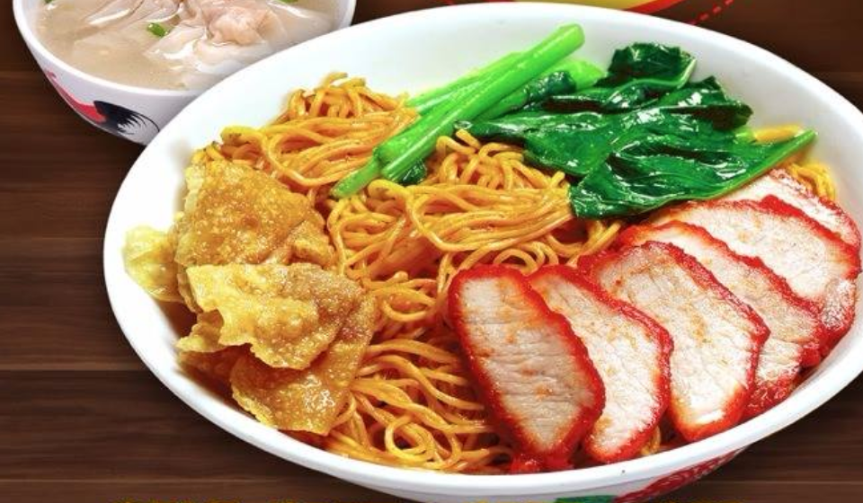

WONTON NOODLE RECIPE
Back

DESCRIPTION
The dish is popular in Southern China, Hong Kong, Indonesia, Malaysia, Singapore and Thailand. The dish usually consists of egg noodles served in a hot broth, garnished with leafy vegetables and wonton dumplings.
Ingredietns
- Wonton Noodles
- Wonton
- Bok choy
- Green onion
- shrimp
Steps
- Chop vegetables & green onions
- Cook noddles, let it boil in water for about 60 seconds
- Add water and chicken broth and bring it to a boil
- Cook shrimp for a minute, transfer bok choy
- Cook wontons for 3-5 minutes then plate